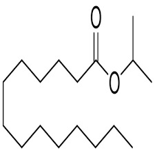
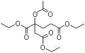
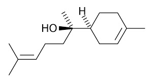
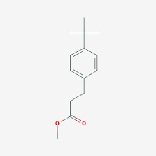
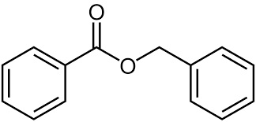
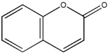
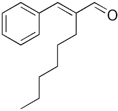
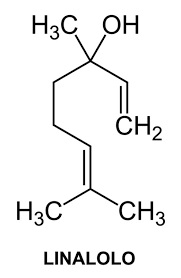

Accennavo l'altra volta all'idiosincrasia mediatica verso la chimica e tutto il suo mondo, indotta da un'informazione e da una cultura scientifica media che non ardisco definire.
Ho preso a caso da uno scaffale di supermercato un deodorante spray, del quale mi piace riportare la composizione chimica e le formule relative che costituiscono questo popolarissimo prodotto.
State a sentire perchè la ballata è bella ed i protagonisti sono tanti e molto articolati... nelle loro ramificazioni laterali, se così vogliamo dire.
Allora, nella bomboletta c'è dentro (maestro, vai con la musica):
- butano H3C-CH2-CH2-CH3
- propano H3C-CH2-CH3
- isobutano H3C-CH(CH3)-CH3
- ciclopentasilossano

- cicloesasilossano, idem come sopra, con un anello a 12 termini
- alluminio cloruro AlCl3
- isopropilmiristato

- trietilcitrato

- quaternium-18 hectorite (sali di ammonio quaternario di acidi grassi e particolari argille: impossibile mettere la formula)
- bisabololo

- biossido di silicio SiO2
- butilfenilmetilpropionale

- benzilbenzoato

- cumarina

- esilcinnamale

- linalolo

- estratto di foglie di aloe (evviva!)
M O R A L E
Ma la chimica è cattiva, è neutra, è buona o dipende da qualcos'altro?
Ma la cumarina fatta in fabbrica o fatta dalla natura sono uguali?
Ma quella sostanza che... e così via per altre mille domande che un bimbo intelligente potrebbe fare...
Perchè non insegnamo tutto ciò ai bambini, in forma scientifica, che poi lo sappiano quando sono grandi?
Perchè dosi industriali di schizofrenia chimica mediatica e poi basta prendere un banale deodorante per poterci costruire su una ballata come questa?
Troppi perchè che non avranno mai una risposta.